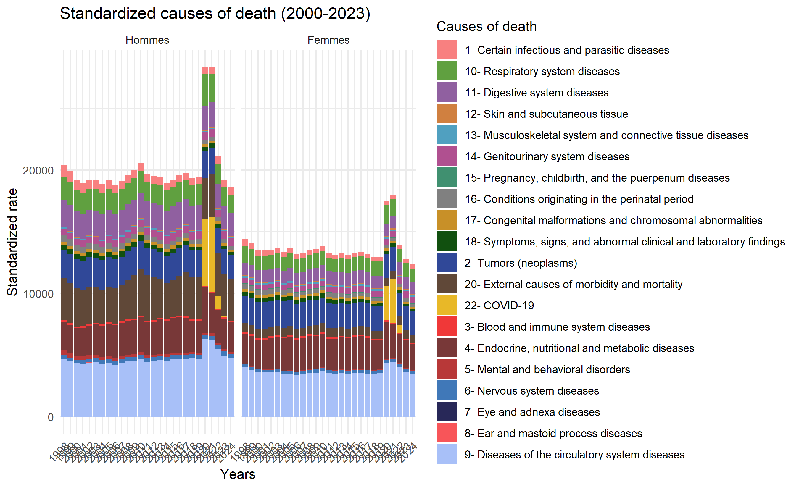

Bloc A · Level 2 — Epidemiological transitions in Mexico, 1990–2024
Published
April 2026
Bloque A · Nivel 2Variables : year · sex · cause
Introducción analítica
La incorporación de la causa de muerte como dimensión analítica permite identificar las grandes transiciones epidemiológicas que caracterizan la evolución sanitaria de México durante las tres ultimas décadas.
En este nivel se busca responder tres preguntas clave :
¿Qué enfermedades concentran la mayor carga de mortalidad ?
¿Cómo ha evolucionado la composición por causa en el tiempo ?
¿Existen diferencias de género en los patrones causales ?
Tip
Enlace con el nivel anterior
El Nivel ① — Descriptivo general establece las tendencias brutas de mortalidad. Aquí añadimos la dimensión causal para explicar esas tendencias.
lookup<-data.frame( cause =as.character(names(cause_name)), cause_name =as.character(cause_name))mort_causa_pct<-mort_causa_pct%>%mutate(cause =as.character(cause))%>%left_join(lookup, by ="cause")ggplot(mort_causa_pct,aes(x =year, y =pct, fill =cause_name))+geom_area(alpha =0.88, color ="white", linewidth =0.3)+scale_fill_manual(values =cols_20)+scale_x_continuous(breaks =seq(1998, 2022, 4))+scale_y_continuous(labels =label_percent(scale =0.3))+labs( title ="Composition of mortality by cause group", subtitle ="Annual proportion of deaths, Mexico 1990–2024", x =NULL, y ="% deaths", fill =NULL)+theme_minimal(base_size =13)+theme( legend.position ="bottom", legend.key.size =unit(0.2, "cm"), plot.title =element_text(face ="bold", color ="#1a2744"), plot.subtitle =element_text(color ="#6c757d"), panel.grid.minor =element_blank())+guides(fill =guide_legend(nrow =2))
Figure 1: Structure de la mortalité par cause, 1998–2024 (%)
Code
ggplot(mort_causa,aes(x =year, y =deaths/1000, color =cause, group =cause))+geom_line(linewidth =1)+geom_point(size =2, alpha =0.8)+geom_label_repel( data =mort_causa|>filter(year==last_year),aes(label =str_wrap(cause, 18)), size =3, nudge_x =0.8, segment.color ="grey60", show.legend =FALSE)+scale_color_manual(values =cols_20)+scale_x_continuous(breaks =seq(1998, 2024, 4), limits =c(1998, 2025))+scale_y_continuous(labels =label_comma(suffix =" k"))+labs( title ="Evolución absoluta de la mortalidad por causa", subtitle ="Número de defunciones (miles), México 2000–2023", x =NULL, y ="Defunciones (miles)", color =NULL)+theme_minimal(base_size =13)+theme( legend.position ="none", plot.title =element_text(face ="bold", color ="#1a2744"), plot.subtitle =element_text(color ="#6c757d"), panel.grid.minor =element_blank())
Figure 2: Évolution absolue de la mortalité par cause
load("H:/Mon Drive/Broni/Projet R Mortality/BDD/Data_clean/National/20260421 asmr/asmr_cause.rda")SDR<-asmr_cause%>%filter(year>1997)# install.packages("paletteer")library(paletteer)ggplot(SDR, aes(x =factor(year), y =asmr_100k, fill =cause_name))+geom_bar(stat ="identity", position ="stack")+facet_wrap(~sex_lab)+# scale_fill_paletteer_d("palettetown::carvanha") +scale_fill_manual(values =cols_20[1:length(unique(SDR$cause_name))])+labs( title ="Standardized causes of death (2000-2023)", x ="Years", y ="Standardized rate", fill ="Causes of death")+theme_minimal()+theme(axis.text.x =element_text(angle =45, hjust =1))

Figure 3: Évolution de la mortalité std par cause
Code
#--------------------------Identifier les 5 principales causes de décès par année-----------------------------# top_5_causes_year <- SDR %>%# group_by(year, sex) %>%# slice_max(SDR, n = 5) %>%# ungroup() %>%# arrange(year, desc(SDR))# # top_5_causes_year <- top_5_causes_year %>%# mutate(# capitulo = as.character(CAPITULO),# cause_name = libelles_cause[CAPITULO], # Map codes to names# # label_sex = label_sex[sex]# sex_label = case_when(# sex == 1 ~ "Men",# sex == 2 ~ "Women")# )#-------------------------------------------------------cols_7<-c("#C89028FF", "#10580FFF", "#304898FF", "#783838FF","#A8C0F8FF", "#F03838FF", "grey80", "#4078B8FF", "#282858FF", "#F85559FF")# label_sex <- c("1" = "Men", "2"= "Women")#-------------------------------------------------------# # ggplot(top_5_causes_year, aes(x = factor(year), y = SDR, fill = cause_name)) +# geom_bar(stat = "identity", position = "stack") +# facet_wrap(~ sex_label) +# # scale_fill_paletteer_d("palettetown::carvanha") +# scale_fill_manual(values = cols_7[1:length(unique(SDR$libelles_cause))]) +# # labs(# title = "Top 5 standardized causes of death (2000-2023)",# x = "Years",# y = "Standardized rate",# fill = "Causes of death"# ) +# theme_minimal() +# theme(axis.text.x = element_text(angle = 45, hjust = 1))#
# Indice de Herfindahl-Hirschman (concentration causale)ihh<-mort_causa_pct|>group_by(year)|>summarise(ihh =sum((pct/100)^2), n_causas =n_distinct(cause), causa_top =cause[which.max(pct)], pct_top =max(pct))|>ungroup()ggplot(ihh, aes(x =year, y =ihh))+geom_line(color ="#2a7a8c", linewidth =1.2)+geom_point(color ="#2a7a8c", size =3)+scale_x_continuous(breaks =seq(2000, 2023, 4))+labs( title ="Índice de concentración de la mortalidad por causa (IHH)", subtitle ="Valores más altos indican mayor concentración en pocas causas", x =NULL, y ="Índice Herfindahl-Hirschman")+theme_minimal(base_size =13)+theme( plot.title =element_text(face ="bold", color ="#1a2744"), plot.subtitle =element_text(color ="#6c757d"))
Points clés de ce niveau
Note
Retenir de ce niveau ②
La mortalité mexicaine est dominée par les maladies cardiovasculaires et le diabète mellitus, reflet de la transition épidémiologique avancée.
Les causes externes (accidents, violences) présentent un ratio H/M nettement supérieur à 1, révélant un déterminisme de genre fort.
La dynamique temporelle montre une diversification progressive des causes, visible dans la baisse de l’IHH après 2010.
---title: "2- Disaggregation by cause of death"subtitle: "Bloc A · Level 2 — Epidemiological transitions in Mexico, 1990–2024"date: todaydate-format: "MMMM YYYY"lang: "en"---<span class="badge-nivel">Bloque A · Nivel 2</span>**Variables** : `year` · `sex` · `cause`## Introducción analíticaLa incorporación de la **causa de muerte** como dimensión analítica permite identificarlas grandes **transiciones epidemiológicas** que caracterizan la evolución sanitariade México durante las tres ultimas décadas.En este nivel se busca responder tres preguntas clave :1. ¿Qué enfermedades concentran la mayor carga de mortalidad ?2. ¿Cómo ha evolucionado la composición por causa en el tiempo ?3. ¿Existen diferencias de género en los patrones causales ?::: {.callout-tip}**Enlace con el nivel anterior** El [Nivel ① — Descriptivo general](A1_descriptivo_general.qmd) establece las tendenciasbrutas de mortalidad. Aquí añadimos la dimensión causal para explicar esas tendencias.:::```{r setup-n2, include=FALSE}load("H:/Mon Drive/Broni/Projet R Mortality/BDD/Data_clean/National/20260421 asmr/ratepopbycause.rda")library(tidyverse)library(scales)library(knitr)library(kableExtra)library(ggrepel)options(ggrepel.max.overlaps =Inf)library(patchwork) # composition de graphiquesmort <- deces1 |>filter(year >1997) |>rename(deaths = n_death, cause = CAPITULO) |>mutate(year =as.numeric(as.character( year)))# ── Palette cohérente (définie dans index.qmd, reproduite ici) ───────palette_sexo <-c("1"="#2a7a8c", "2"="#e84855", "Total"="grey40")#-------------------------plot SMR ------------------------------cause_name <-c("01"="1 - Certain infectious and parasitic diseases","02"="2 - Tumors (neoplasms)","03"="3 - Diseases of the blood and immune system","04"="4 - Endocrine, nutritional, and metabolic diseases","05"="5 - Mental and behavioral disorders","06"="6 - Diseases of the nervous system","07"="7 - Diseases of the eye and adnexa","08"="8 - Diseases of the ear and mastoid process","09"="9 - Diseases of the circulatory system","10"="10 - Diseases of the respiratory system","11"="11 - Diseases of the digestive system","12"="12 - Diseases of the skin and subcutaneous tissue","13"="13 - Diseases of the musculoskeletal system and connective tissue","14"="14 - Diseases of the genitourinary system","15"="15 - Pregnancy, childbirth, and the puerperium","16"="16 - Conditions originating in the perinatal period","17"="17 - Congenital malformations and chromosomal abnormalities","18"="18 - Symptoms, signs, and abnormal clinical and laboratory findings","20"="20 - External causes of morbidity and mortality","22"="22 - COVID-19")# palette_causa <- c(# "Enfermedades cardiovasculares" = "#1a2744",# "Tumores malignos" = "#e84855",# "Diabetes mellitus" = "#2a7a8c",# "Enfermedades respiratorias" = "#f4a261",# "Causas externas" = "#6c757d",# "Otras" = "#adb5bd"# )cols_20 <-c("#F88080FF", "#60A040FF", # muted green"#9060A0FF", # muted purple"#D08040FF", # muted brown‑orange"#50A0C0FF", # muted teal"#B05090FF", # muted magenta"#409070FF", # muted forest green"#808080FF" , # medium gray (for baseline / total)"#C89028FF", "#11500FFF", "#304898FF", "#604838FF","#E8B828FF", "#F03838FF", "#783838FF", "#B83838FF","#4078B8FF", "#282858FF", "#F85559FF", "#A8C0F8FF")# ── Données (remplacer par readRDS("data/mort_simulated.rds")) ────────# set.seed(42)# years <- 2000:2022# mort <- expand.grid(# year = years,# sex = c("Hombre", "Mujer"),# state = c("Ciudad de México", "Jalisco", "Nuevo León",# "Veracruz", "Chiapas", "Oaxaca",# "Guanajuato", "Michoacán", "Puebla", "Sonora"),# cause = c("Enfermedades cardiovasculares", "Tumores malignos",# "Diabetes mellitus", "Enfermedades respiratorias",# "Causas externas", "Otras")# ) |># mutate(# deaths = rpois(n(), lambda = 500 +# 40 * (year - 2000) +# ifelse(sex == "Hombre", 120, 0) +# case_when(# cause == "Diabetes mellitus" ~ 200,# cause == "Enfermedades cardiovasculares" ~ 300,# cause == "Tumores malignos" ~ 150,# TRUE ~ 50# ) +# case_when(# state == "Ciudad de México" ~ 400,# state == "Chiapas" ~ -100,# TRUE ~ 0# )),# rate = deaths / runif(n(), 100000, 2000000) * 100000# )# ── Agrégations utiles ────────────────────────────────────────────────# Par année × causemort_causa <- mort |>group_by(year, cause) |>summarise(deaths =sum(deaths), .groups ="drop")# Par année × cause × sexemort_causa_sex <- mort |>group_by(year, sex, cause) |>summarise(deaths =sum(deaths), .groups ="drop")# Part relative de chaque cause par anmort_causa_pct <- mort_causa |>group_by(year) |>mutate(pct = deaths /sum(deaths) *100) |>ungroup()# Dernière année disponiblelast_year <-max(mort$year)# class(year) ```## Vue d'ensemble : composition de la mortalité### Évolution de la structure par cause::: {.panel-tabset}#### Aire empilée (%)```{r fig-aire-empilada, fig.cap="Structure de la mortalité par cause, 1998–2024 (%)"}lookup <-data.frame(cause =as.character(names(cause_name)),cause_name =as.character(cause_name))mort_causa_pct <- mort_causa_pct %>%mutate(cause =as.character(cause)) %>%left_join(lookup, by ="cause")ggplot(mort_causa_pct,aes(x = year, y = pct, fill = cause_name)) +geom_area(alpha =0.88, color ="white", linewidth =0.3) +scale_fill_manual(values = cols_20) +scale_x_continuous(breaks =seq(1998, 2022, 4)) +scale_y_continuous(labels =label_percent(scale =0.3)) +labs(title ="Composition of mortality by cause group",subtitle ="Annual proportion of deaths, Mexico 1990–2024",x =NULL, y ="% deaths", fill =NULL ) +theme_minimal(base_size =13) +theme(legend.position ="bottom",legend.key.size =unit(0.2, "cm"),plot.title =element_text(face ="bold", color ="#1a2744"),plot.subtitle =element_text(color ="#6c757d"),panel.grid.minor =element_blank() ) +guides(fill =guide_legend(nrow =2))```#### Lignes absolues```{r fig-lineas-absolutas, fig.cap="Évolution absolue de la mortalité par cause"}ggplot(mort_causa,aes(x = year, y = deaths /1000,color = cause, group = cause)) +geom_line(linewidth =1) +geom_point(size =2, alpha =0.8) +geom_label_repel(data = mort_causa |>filter(year == last_year),aes(label =str_wrap(cause, 18)),size =3, nudge_x =0.8, segment.color ="grey60",show.legend =FALSE ) +scale_color_manual(values = cols_20) +scale_x_continuous(breaks =seq(1998, 2024, 4),limits =c(1998, 2025)) +scale_y_continuous(labels =label_comma(suffix =" k")) +labs(title ="Evolución absoluta de la mortalidad por causa",subtitle ="Número de defunciones (miles), México 2000–2023",x =NULL, y ="Defunciones (miles)", color =NULL ) +theme_minimal(base_size =13) +theme(legend.position ="none",plot.title =element_text(face ="bold", color ="#1a2744"),plot.subtitle =element_text(color ="#6c757d"),panel.grid.minor =element_blank() )```#### Tableau résumé```{r tabla-causa-anio}mort_causa |>filter(year %in%c(2000, 2005, 2010, 2015, 2020, 2024)) |>pivot_wider(names_from = year, values_from = deaths) |>arrange(desc(`2024`)) |>mutate(cause =unname(cause_name[cause])) |>mutate(across(where(is.numeric), ~format(.x, big.mark =","))) |>kable(caption ="Deaths by cause of death, selected years",col.names =c("Cause", "2000", "2005", "2010", "2015", "2019", "2024") ) |>kable_styling(bootstrap_options =c("striped", "hover"),full_width =FALSE) |>row_spec(1, bold =TRUE, background ="#f0f4f8")```:::## Causes de décès std### Standardized death rates (SDR) par cause, sexe et année::: {.panel-tabset}#### Evolution des causes de décès (std rate)```{r fig-stdcausedeath, fig.cap="Évolution de la mortalité std par cause"}load("H:/Mon Drive/Broni/Projet R Mortality/BDD/Data_clean/National/20260421 asmr/asmr_cause.rda")SDR <- asmr_cause %>%filter(year>1997)# install.packages("paletteer")library(paletteer)ggplot(SDR, aes(x =factor(year), y = asmr_100k, fill = cause_name)) +geom_bar(stat ="identity", position ="stack") +facet_wrap(~ sex_lab) +# scale_fill_paletteer_d("palettetown::carvanha") +scale_fill_manual(values = cols_20[1:length(unique(SDR$cause_name))]) +labs(title ="Standardized causes of death (2000-2023)",x ="Years",y ="Standardized rate",fill ="Causes of death" ) +theme_minimal() +theme(axis.text.x =element_text(angle =45, hjust =1))```#### Top 5 des causes de décès (std rate)```{r fig-top5stdcausedeath, fig.cap="Top 5 des causes de la mortalité (std)"}#--------------------------Identifier les 5 principales causes de décès par année-----------------------------# top_5_causes_year <- SDR %>%# group_by(year, sex) %>%# slice_max(SDR, n = 5) %>%# ungroup() %>%# arrange(year, desc(SDR))# # top_5_causes_year <- top_5_causes_year %>%# mutate(# capitulo = as.character(CAPITULO),# cause_name = libelles_cause[CAPITULO], # Map codes to names# # label_sex = label_sex[sex]# sex_label = case_when(# sex == 1 ~ "Men",# sex == 2 ~ "Women")# )#-------------------------------------------------------cols_7 <-c("#C89028FF", "#10580FFF", "#304898FF", "#783838FF","#A8C0F8FF", "#F03838FF", "grey80", "#4078B8FF", "#282858FF", "#F85559FF")# label_sex <- c("1" = "Men", "2"= "Women")#-------------------------------------------------------# # ggplot(top_5_causes_year, aes(x = factor(year), y = SDR, fill = cause_name)) +# geom_bar(stat = "identity", position = "stack") +# facet_wrap(~ sex_label) +# # scale_fill_paletteer_d("palettetown::carvanha") +# scale_fill_manual(values = cols_7[1:length(unique(SDR$libelles_cause))]) +# # labs(# title = "Top 5 standardized causes of death (2000-2023)",# x = "Years",# y = "Standardized rate",# fill = "Causes of death"# ) +# theme_minimal() +# theme(axis.text.x = element_text(angle = 45, hjust = 1))# ```:::<!-- ## Différences de genre dans les patterns causaux -->::: {.panel-tabset}#### Hommes vs Femmes (2023)```{r fig-sex-causa-barras, fig.cap="Mortalité par cause et sexe, dernière année disponible"}```#### Ratio H/M par cause```{r fig-ratio-hm}```#### Tendencias por sexo```{r fig-tendencias-sexo, fig.height=7, fig.cap="Tendencias por causa y sexo, 2000–2023"}```:::## Indicateurs de concentration```{r indice-concentracion}# Indice de Herfindahl-Hirschman (concentration causale)ihh <- mort_causa_pct |>group_by(year) |>summarise(ihh =sum((pct /100)^2),n_causas =n_distinct(cause),causa_top = cause[which.max(pct)],pct_top =max(pct)) |>ungroup()ggplot(ihh, aes(x = year, y = ihh)) +geom_line(color ="#2a7a8c", linewidth =1.2) +geom_point(color ="#2a7a8c", size =3) +scale_x_continuous(breaks =seq(2000, 2023, 4)) +labs(title ="Índice de concentración de la mortalidad por causa (IHH)",subtitle ="Valores más altos indican mayor concentración en pocas causas",x =NULL, y ="Índice Herfindahl-Hirschman" ) +theme_minimal(base_size =13) +theme(plot.title =element_text(face ="bold", color ="#1a2744"),plot.subtitle =element_text(color ="#6c757d") )```## Points clés de ce niveau::: {.callout-note icon="false"}**Retenir de ce niveau ②**- La mortalité mexicaine est dominée par les maladies **cardiovasculaires** et le **diabète mellitus**, reflet de la transition épidémiologique avancée.- Les **causes externes** (accidents, violences) présentent un ratio H/M nettement supérieur à 1, révélant un déterminisme de genre fort.- La dynamique temporelle montre une **diversification** progressive des causes, visible dans la baisse de l'IHH après 2010.:::## Navigation::: {style="display:flex; justify-content:space-between; margin-top:2rem;"}[← ① Descriptivo general](A1_descriptivo_general.qmd){.btn .btn-outline-secondary}[→ ③ Causas específicas](A3_causas_especificas.qmd){.btn .btn-primary}:::